The Story We Once Wrote
"Every person we meet leaves a chapter in our story. And even if the book must close, the ink we wrote with remains beautiful."
The First Spark
How two paths crossed in Tamale
Love at First Sight
It was at an extra class organized by our masters back in Presec Tamale. My friend "Black" and I arrived early and sat inside. Then, she walked in with her friends—Fauzia and Khadija. In that single instant, my heart stopped. I turned to Black and told him, 'She is incredibly beautiful.' That night, sleep refused to find me; she ran through my mind on a loop.
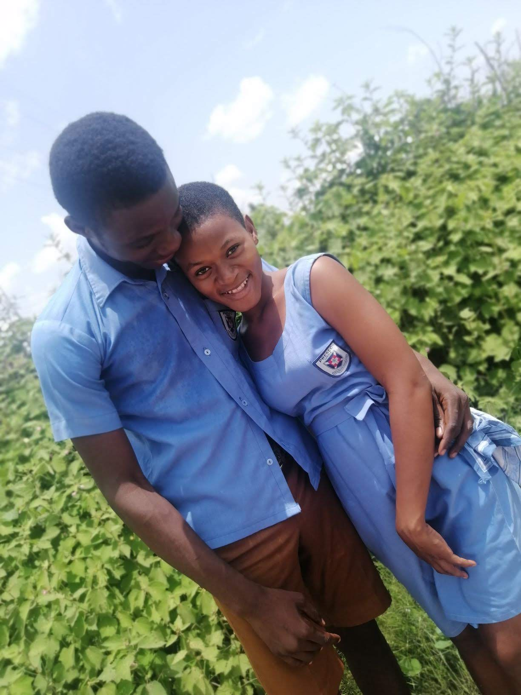
Gaining the Courage
Terrified of rejection, I couldn't bring myself to shoot my shot. I confided in Fauzia, who encouraged me to try. Fauzia spoke to Khadija, and together they helped talk to Dinsagi on my behalf. For a long time, Dinsagi didn't agree. But the hope remained, and we kept talking, building a bridge across my fears.
Our Official Beginning
The persistence and waiting finally blossomed. On this beautiful evening, she looked at me and agreed to be my girlfriend. It was, without a doubt, the happiest day of my life. A quiet declaration of love that launched a thousand beautiful memories.
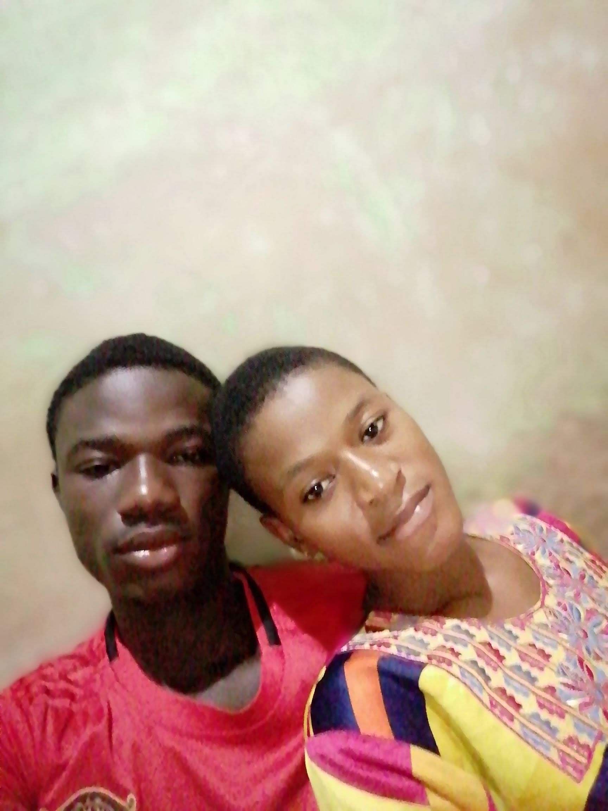
Moments in the Sand
The chapters we wrote day by day
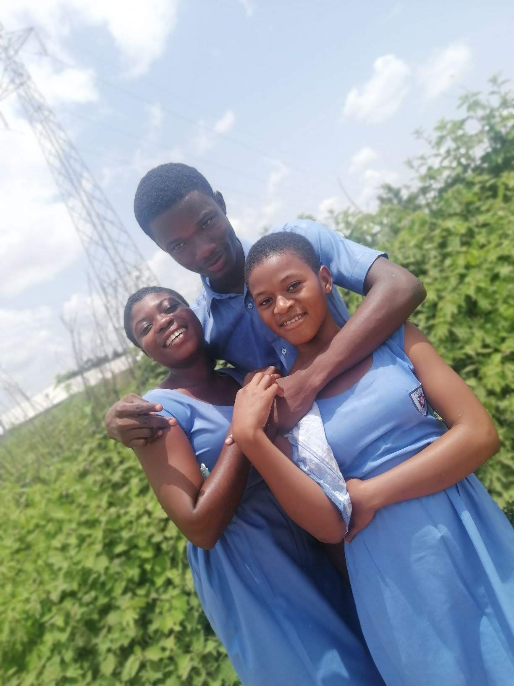
The Tea & WASSCE Days
When the high-stress period of WASSCE exams arrived, Dinsagi stayed near campus with her aunt. Because of this, we spent 99.9% of our time together. We were total lovebirds. She absolutely loved hot tea. We would sit together, prepare tea, sip slowly, and talk about everything. Those simple, quiet moments of study and shared tea remain some of my absolute warmest memories.
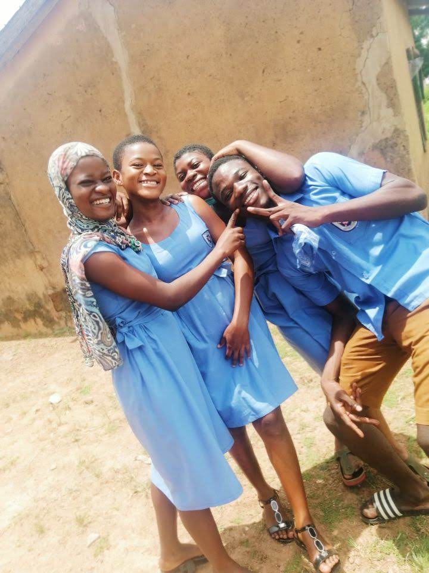
Tears of Relieved Joy
I remember falling very ill while she was away visiting her parents. The moment she returned to campus and I laid eyes on her, tears spilled down my cheeks. It wasn't sadness—it was the pure, overwhelming joy of seeing her face again. I loved her with every single fiber of my being and couldn't bear to be apart from her for even minutes.
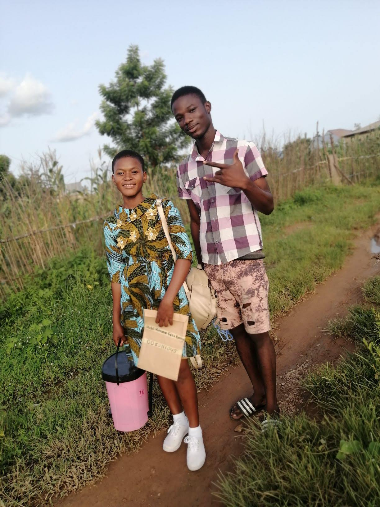
The Public Apology & Forever Promise
One day, I asked Dinsagi when she first realized she loved me so deeply. She recalled a day when I had upset her, leading to a silent day and night. During that time, I fell ill and couldn't attend classes. Desperate to make things right, I sent our friend Black to beg for forgiveness, but she refused. Despite being weak and sick in bed, I got up, ran to campus, and knelt in public to apologize to her. That evening, she came to me, held me close, and confessed her deep love—wishing that I would be her first and last love until the end of her days.
The Miles Between Us
Life soon brought changes. Dinsagi went off to Nursing College at Gushiegu, while I had to focus on university and rewriting my exams. Distance became a heavy weight. We were both young, learning how to handle love and life. I didn't have money to spoil her or make her feel special in the ways I dreamed, which sat heavily on my heart. Slowly, the busy routines of nursing school created silent hours between us.
Frames of Our Memories
Frozen moments from a beautiful chapter
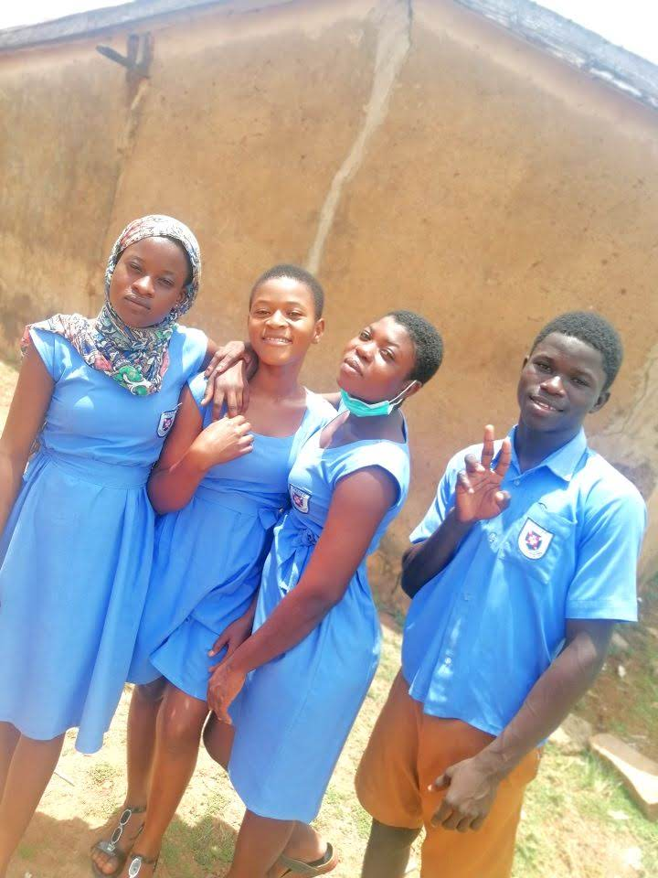
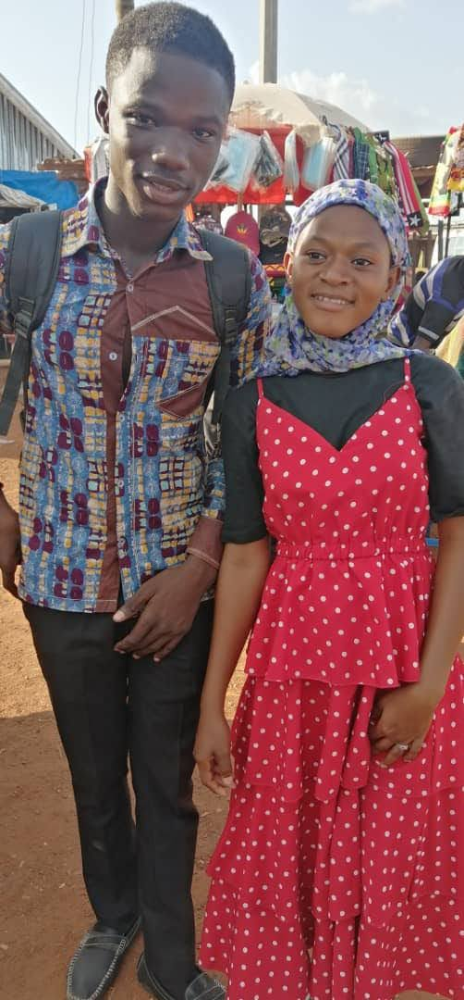
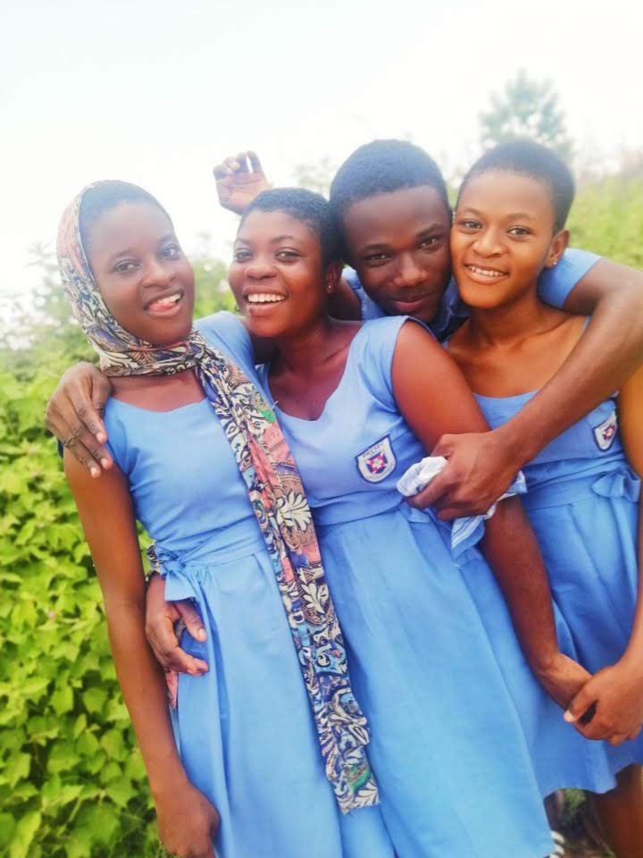
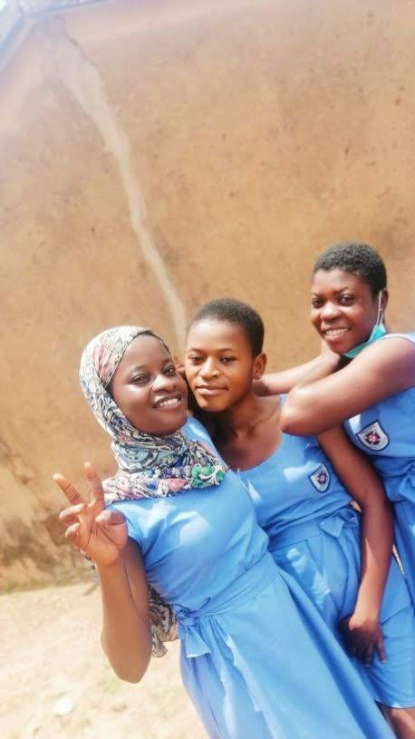
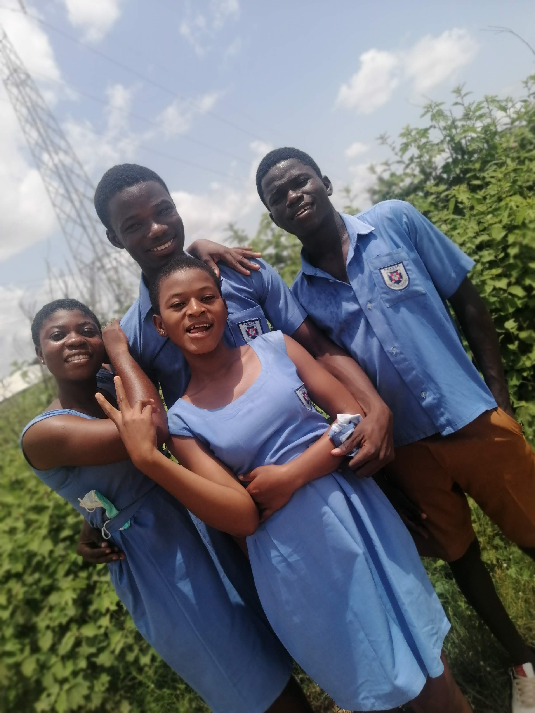
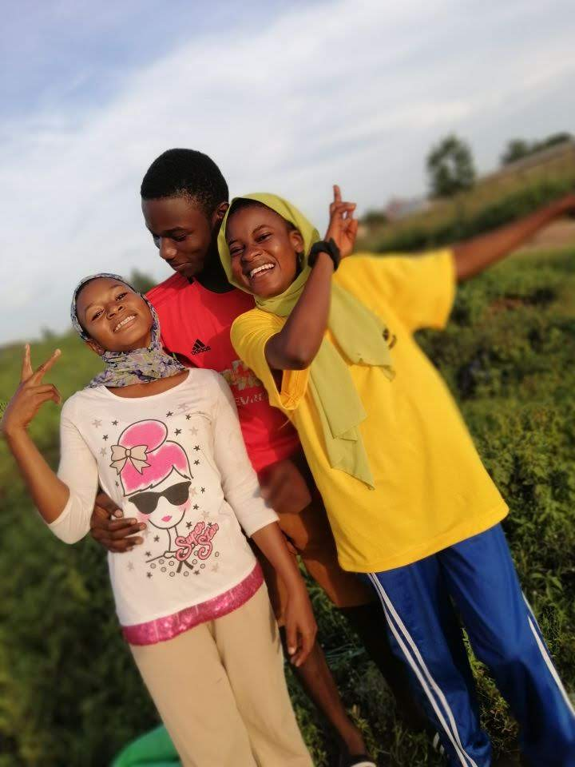
Moments I Wish I Could Replay
Flickers of movement from the days we shared
Walking Hand in Hand
Short moments of walking holding hands, feeling like the world belongs to us.
Accompanying Her
Moments of walking together as I accompany her and her friends back home.
Holding On
A gentle record of holding hands, a silent promise of connection.
Shared Echoes
Click the questions to reveal details of our shared history
We met at extra classes organized by one of our masters back in Presec Tamale around May 15, 2021. My friend "Black" and I arrived early and sat inside. She walked in with her friends Fauzia and Khadija, and my heart stopped. That night, sleep refused to find me.
During our WASSCE exams preparation, Dinsagi stayed near campus with her aunt. Because of this, we spent 99.9% of our time together. Dinsagi was a huge tea lover—we prepared hot tea, shared it under the campus shade, and talked about everything. Those simple, quiet moments of study and shared tea remain some of my absolute warmest memories.
I got her upset and she didn't speak to me for a whole day. At the time, I fell sick, unable to go to school. I sent Black to beg her for forgiveness, but she refused. Despite being weak and sick in bed, I got up, ran to campus, and knelt in public to apologize to her. That evening, she came to me, held me close, and confessed her deep love—wishing that I would be her first and last love until the end of her days.
Our journey officially began on June 7, 2021, when Dinsagi agreed to be my girlfriend. It remains the happiest day of my life, a memory we protect in our private vault.
A Letter to Dinsagi
Click the envelope to slide open the letter and reveal the contents
Where the Ink Faded
A mature reflection on how we changed
Divergent Horizons
After completing nursing college, Dinsagi returned to pursue fashion design, while my university studies and rewriting exams placed heavy responsibilities on me. One day, her phone broke. I wished with everything in me that I had the money to replace it, to make her feel secure and special, but I simply did not. That financial helplessness felt like a mountain between us.
Soon, the conversation felt different. When I traveled all the way to Tamale during vacation just to see her, she was constantly busy, and the distance felt cold. Learning through rumors that she had a new phone from someone else, and confronting the wall of silence, hurt deeply. The final realization came when a mutual friend revealed that religious differences and the pressure of me not being a Muslim played a silent, heavy role in her withdrawal. I chose to step away, officially ending our relationship on May 3, 2026—not because the love had died, but because the respect had to survive.
"Some stories must end so that both writers can keep moving forward."
Secret Vault of Memories
Enter our official anniversary date (DDMMYYYY) to unlock a hidden memory card
Lessons From Our Story
What love left behind when it departed
Acceptance Without Blame
Love taught me that the people we love most are not guaranteed to stay in our lives forever. Holding on with anger only ruins the beauty of what was. Accepting their departure without blame is the ultimate maturity.
The Value of Self-Respect
Even when you love someone with every fiber of your being, you must have the courage to walk away when the communication, transparency, and basic respect fade. Love cannot survive on memory alone.
Precious Stillness
I learned that the most valuable parts of a relationship are not the grand statements or the money, but the quiet, simple routines—like sharing tea in a crowded room, or crying tears of joy just seeing a face walk through a door.
Thank you for being part of my story.
"I would still choose you in another life, Dinsagi. Go well, be happy, and write a beautiful life."
May 15, 2021 — June 7, 2021 — May 3, 2026